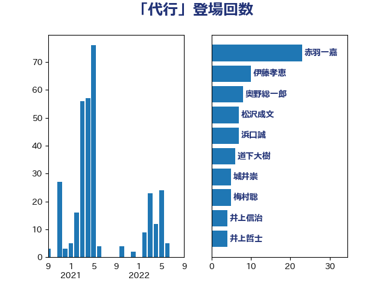

単語「代行」

| 赤羽一嘉 | 公明党 | 23 回 |
| 伊藤孝恵 | 国民民主党 | 10 回 |
| 奥野総一郎 | 立憲民主党 | 8 回 |
| 松沢成文 | 日本維新の会 | 7 回 |
| 浜口誠 | 国民民主党 | 7 回 |
| 道下大樹 | 立憲民主党 | 6 回 |
| 城井崇 | 立憲民主党 | 5 回 |
| 梅村聡 | 日本維新の会 | 5 回 |
| 井上信治 | 自由民主党 | 4 回 |
| 井上哲士 | 日本共産党 | 4 回 |
| 浅田均 | 日本維新の会 | 4 回 |
| 菅義偉 | 自由民主党 | 4 回 |
| 高橋千鶴子 | 日本共産党 | 4 回 |
| 岸信夫 | 自由民主党 | 3 回 |
| 川田龍平 | 立憲民主党 | 3 回 |
| 笠井亮 | 日本共産党 | 3 回 |
| 足立康史 | 日本維新の会 | 3 回 |
| 三宅伸吾 | 自由民主党 | 2 回 |
| 上川陽子 | 自由民主党 | 2 回 |
| 伊佐進一 | 公明党 | 2 回 |
| 吉川元 | 立憲民主党 | 2 回 |
| 宮本岳志 | 日本共産党 | 2 回 |
| 小里泰弘 | 自由民主党 | 2 回 |
| 山岸一生 | 立憲民主党 | 2 回 |
| 後藤茂之 | 自由民主党 | 2 回 |
| 斉藤鉄夫 | 公明党 | 2 回 |
| 森まさこ | 自由民主党 | 2 回 |
| 森田俊和 | 立憲民主党 | 2 回 |
| 浅野哲 | 国民民主党 | 2 回 |
| 熊谷裕人 | 立憲民主党 | 2 回 |
| 穂坂泰 | 自由民主党 | 2 回 |
| 若宮健嗣 | 自由民主党 | 2 回 |
| 西田実仁 | 公明党 | 2 回 |
| 長峯誠 | 自由民主党 | 2 回 |
| 馬場成志 | 自由民主党 | 2 回 |
| 中曽根康隆 | 自由民主党 | 1 回 |
| 中村裕之 | 自由民主党 | 1 回 |
| 佐藤啓 | 自由民主党 | 1 回 |
| 倉林明子 | 日本共産党 | 1 回 |
| 勝部賢志 | 立憲民主党 | 1 回 |
| 国定勇人 | 自由民主党 | 1 回 |
| 大口善徳 | 公明党 | 1 回 |
| 大西健介 | 立憲民主党 | 1 回 |
| 山口壯 | 自由民主党 | 1 回 |
| 山田賢司 | 自由民主党 | 1 回 |
| 岡本あき子 | 立憲民主党 | 1 回 |
| 岩渕友 | 日本共産党 | 1 回 |
| 岸田文雄 | 自由民主党 | 1 回 |
| 岸真紀子 | 立憲民主党 | 1 回 |
| 市村浩一郎 | 日本維新の会 | 1 回 |
| 庄子賢一 | 公明党 | 1 回 |
| 本村伸子 | 日本共産党 | 1 回 |
| 本田顕子 | 自由民主党 | 1 回 |
| 杉本和巳 | 日本維新の会 | 1 回 |
| 柴山昌彦 | 自由民主党 | 1 回 |
| 森屋隆 | 立憲民主党 | 1 回 |
| 森山浩行 | 立憲民主党 | 1 回 |
| 永岡桂子 | 自由民主党 | 1 回 |
| 海江田万里 | 立憲民主党 | 1 回 |
| 田名部匡代 | 立憲民主党 | 1 回 |
| 石川大我 | 立憲民主党 | 1 回 |
| 石橋通宏 | 立憲民主党 | 1 回 |
| 簗和生 | 自由民主党 | 1 回 |
| 緒方林太郎 | 無所属 | 1 回 |
| 美延映夫 | 日本維新の会 | 1 回 |
| 羽田次郎 | 立憲民主党 | 1 回 |
| 芳賀道也 | 国民民主党 | 1 回 |
| 萩生田光一 | 自由民主党 | 1 回 |
| 赤澤亮正 | 自由民主党 | 1 回 |
| 近藤和也 | 立憲民主党 | 1 回 |
| 長妻昭 | 立憲民主党 | 1 回 |
| 高橋光男 | 公明党 | 1 回 |
| 高階恵美子 | 自由民主党 | 1 回 |
| 鬼木誠 | 立憲民主党 | 1 回 |
| 麻生太郎 | 自由民主党 | 1 回 |